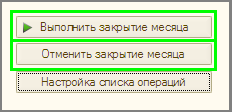
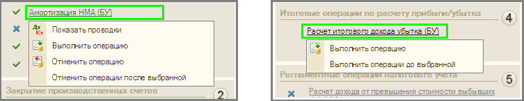
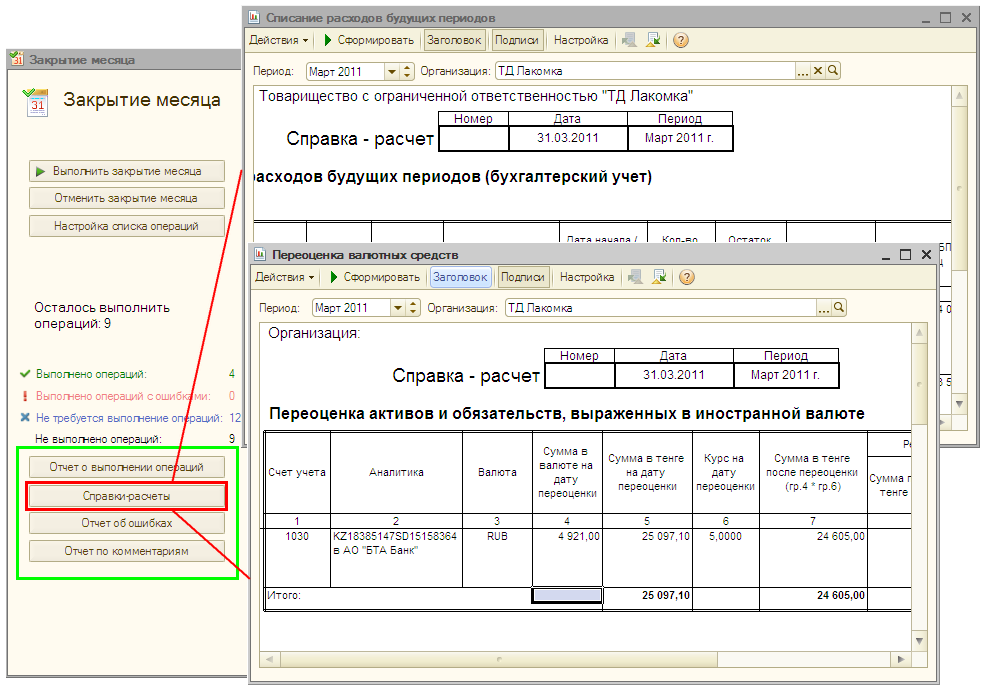

Помощник «Закрытие месяца» предоставляет Пользователю для работы с регламентными процедурами широкие возможности. Опишем некоторые из них.
Например, нажатие на кнопку Выполнить закрытие месяца вызывает выполнение всех регламентных операций, а кнопка Отменить закрытие месяца вызывает отмену выполнения всех регламентных операций указанного периода:

Меню, возникающее при нажатии на регламентную операцию (в зависимости от состояния выбранной операции), расширяют функциональность Помощника «Закрытие месяца». Пользователь может частично выполнить (или отменить выполнение) закрытие месяца, посмотреть результаты проведения операции (Показать проводки):

Помощник «Закрытие месяца» предоставляет Пользователю возможность формирования различных отчетов по выполненным операциям. В частности, можно сформировать отчеты, объясняющие расчеты и отражающие результаты выполнения регламентных операций (Справки-расчеты):

и т. д.
Для ручного выполнения регламентных операций по бухгалтерскому и налоговому учету предназначен документ Закрытие месяца.
| ПРИМЕЧАНИЕ Список Выполняемые действия содержит перечень регламентных операций, по которым при проведении документа будут формироваться проводки в бухгалтерском и налоговом учете. По умолчанию при создании нового документа флажками отмечены все регламентные операции, вне зависимости от выбранной организации (поле Структурная единица). Поэтому Пользователю следует скорректировать список в соответствии с настройками бухгалтерского и налогового учета для выбранной организации, сняв флажки с операций, которые выполнять не нужно. Необходимые регламентные операции могут быть выполнены как с помощью одного документа Закрытие месяца, так и для каждой регламентной процедуры (или нескольких процедур) может быть сформирован отдельный документ. |
Только что Вы научились проводить закрытие месяца.
Из следующего раздела Вы узнаете, как получить данные по остаткам и оборотам счетов бухгалтерского и налогового учета.